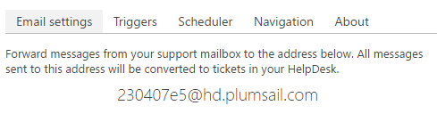

How forwarding works¶
If you want to create new tickets automatically when new messages arrive to your support mailbox, you need to configure forwarding. Forward messages from your support mailbox to autogenerated address as on the picture below.
This address is not real mailbox, it doesn’t store any messages. It is just email handler, which processes all incoming messages and create new tickets in your HelpDesk. It doesn’t store any incoming messages. All operations are performed over secure encrypted https connection.

Dedicated installation
If you want to host this address on your side you can request dedicated installation. Send email with request to support@plumsail.com.